16 shots · 90 seconds · Static layout plan · Agent verification under delegated automation
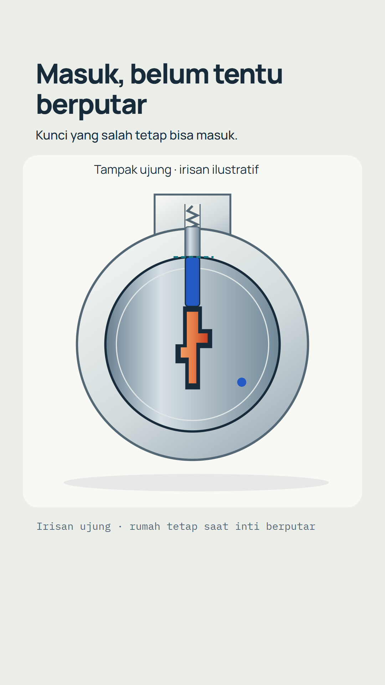
Kunci yang salah tetap bisa masuk.
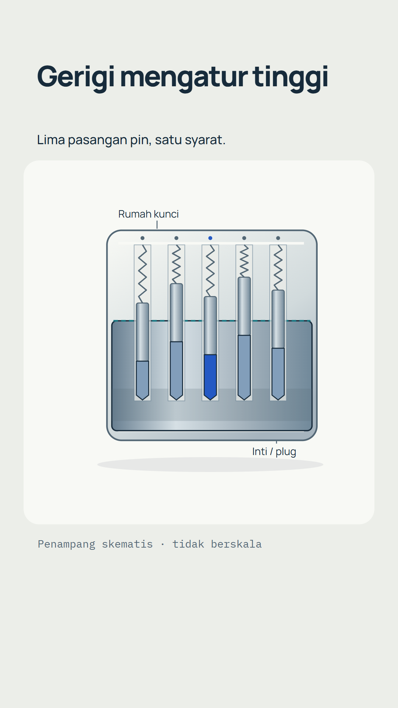
Lima pasangan pin, satu syarat.
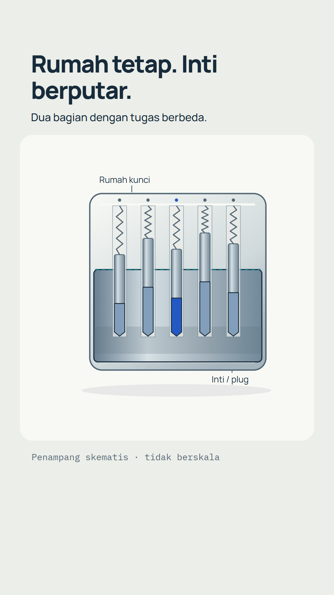
Dua bagian dengan tugas berbeda.
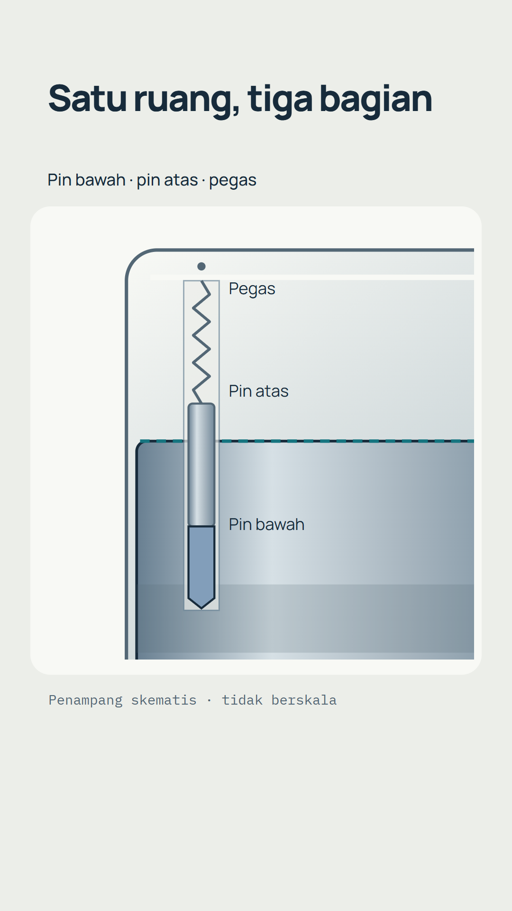
Pin bawah · pin atas · pegas
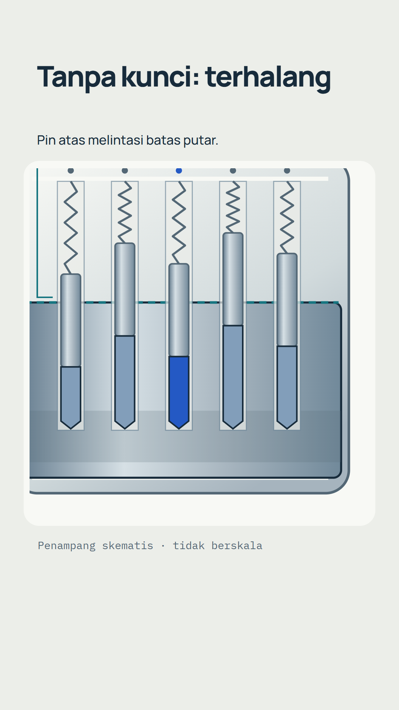
Pin atas melintasi batas putar.
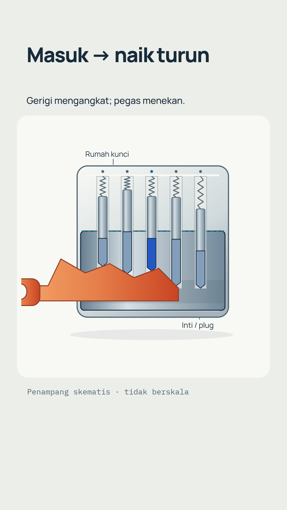
Gerigi mengangkat; pegas menekan.
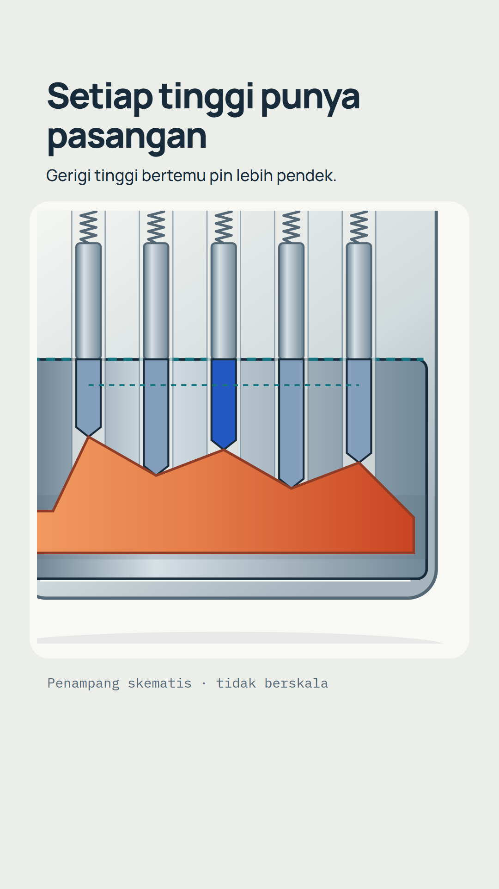
Gerigi tinggi bertemu pin lebih pendek.
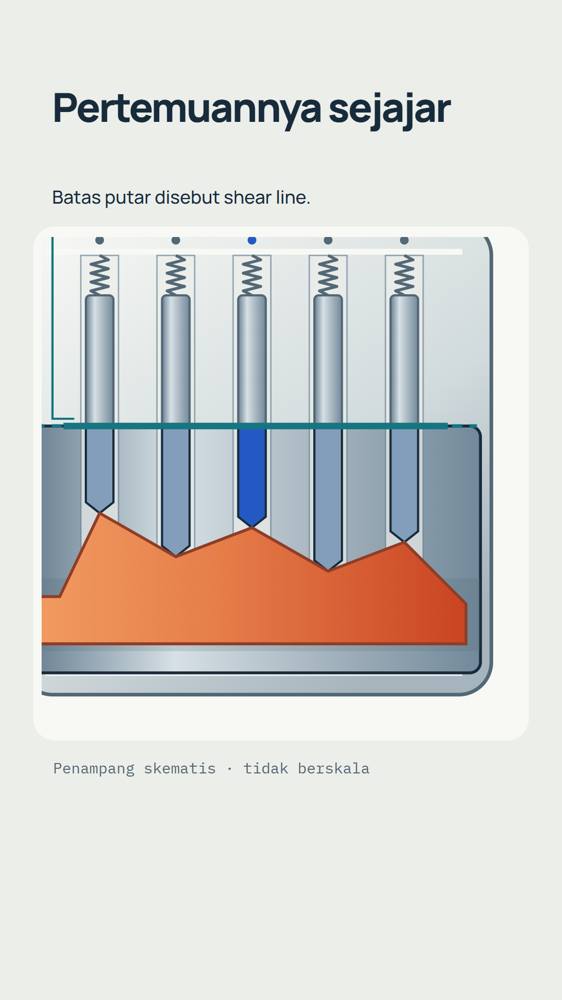
Batas putar disebut shear line.
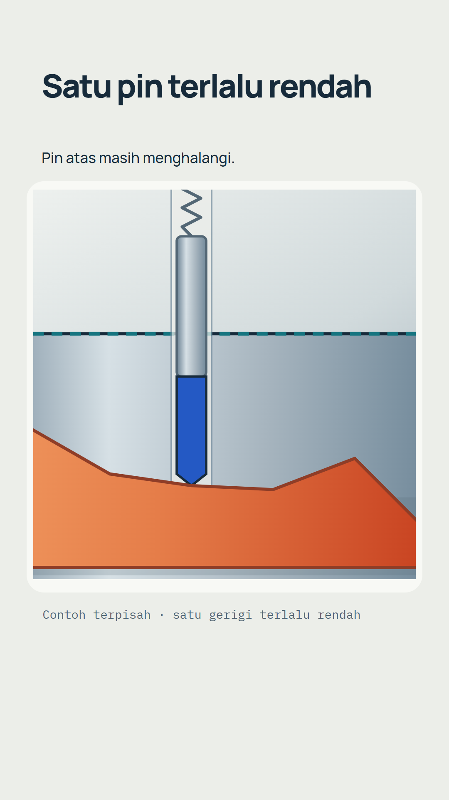
Pin atas masih menghalangi.
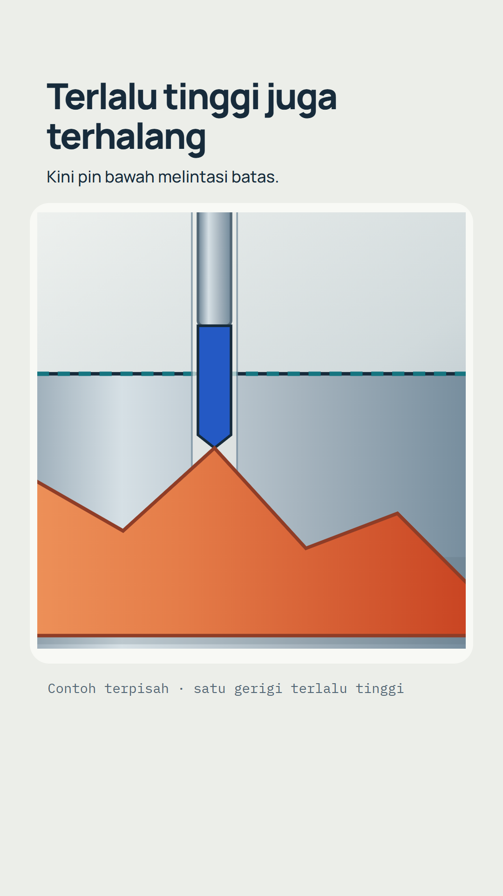
Kini pin bawah melintasi batas.
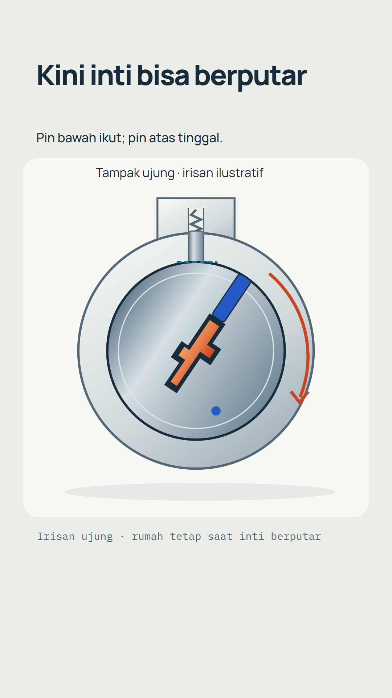
Pin bawah ikut; pin atas tinggal.
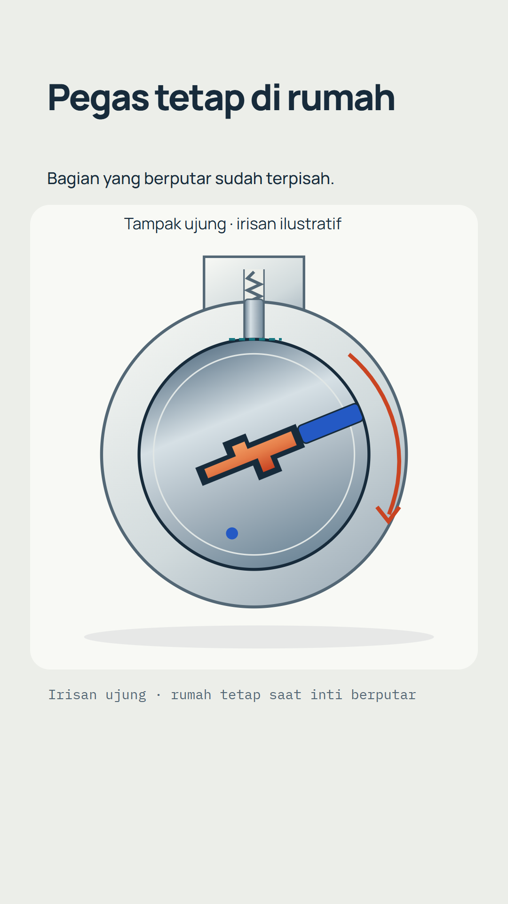
Bagian yang berputar sudah terpisah.
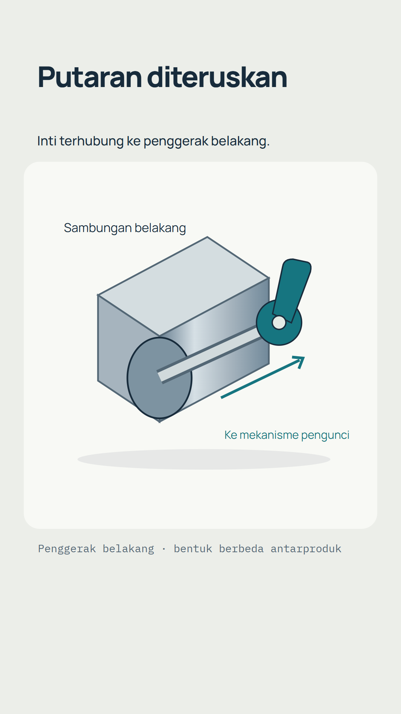
Inti terhubung ke penggerak belakang.
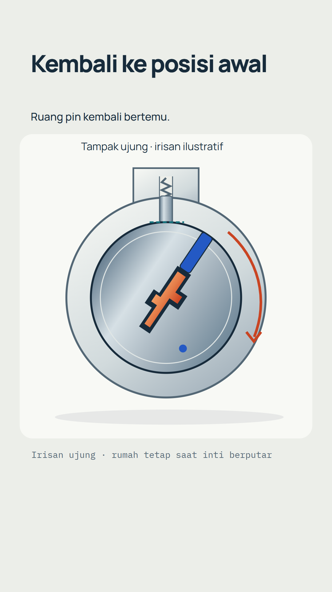
Ruang pin kembali bertemu.
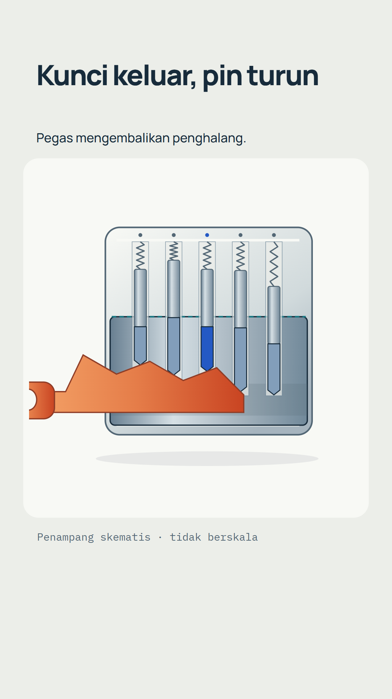
Pegas mengembalikan penghalang.
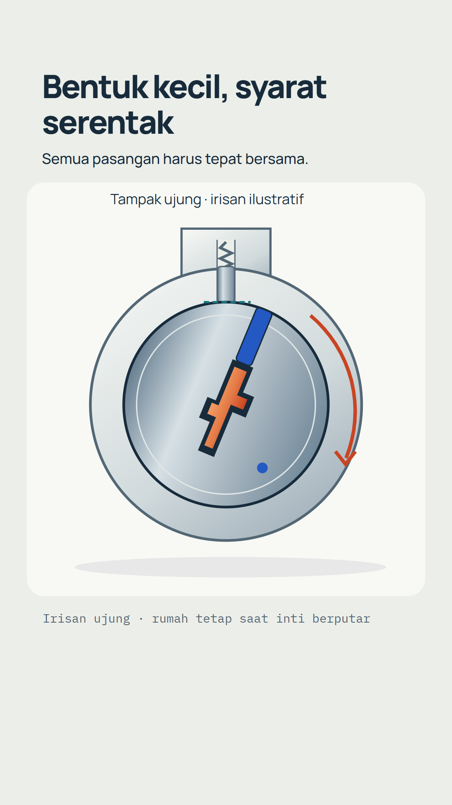
Semua pasangan harus tepat bersama.